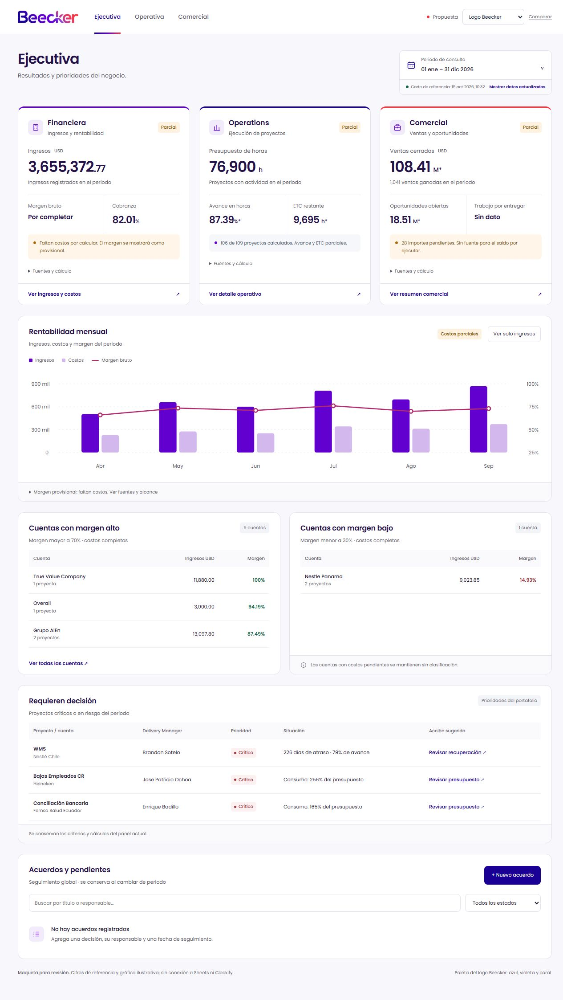
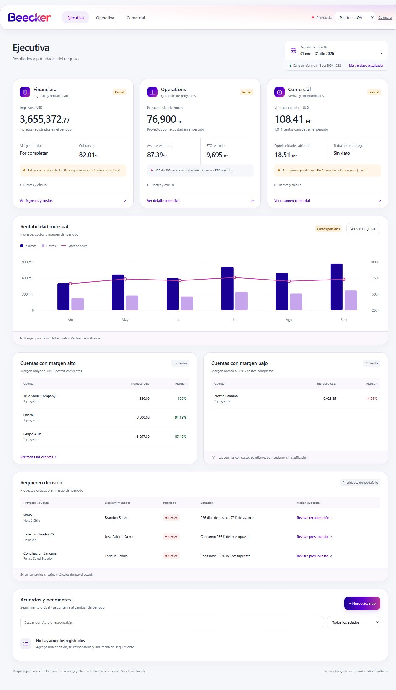

Propuesta A
Logo Beecker
Blanco, azul profundo y violeta. El coral aparece en detalles pequeños para dar identidad sin saturar los datos.
#1B0096#6200D0#FA3541Blanco

Compara cómo cambia Ejecutiva con la identidad del logo o con el estilo de tu plataforma QA. Ambas conservan la distribución adaptable y los mensajes dentro de cada componente.
Blanco, azul profundo y violeta. El coral aparece en detalles pequeños para dar identidad sin saturar los datos.

Los colores de qa_automation_platform: magenta, rosa y violeta, con fondos claros, tarjetas suaves y tipografía Segoe UI.
